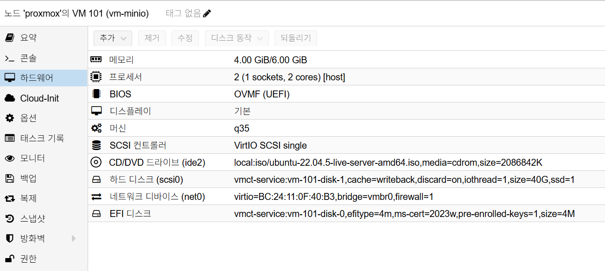

MinIO Installation
개요
Ubuntu 22.04 VM에서 OS 설치를 완료한 뒤, Proxmox에서 1TB 데이터 디스크를 추가하고
/data/minio 경로를 사용해 MinIO를 설치하는 표준 절차입니다.
설치가 가장 중요한 기준 문서이므로, 구축 직후 필요한 검증, 초기 스냅샷, 운영 기준, OIDC 준비, 자주 발생하는 장애 대응까지 이 문서에 포함합니다.
사전 조건
- OS:
Ubuntu 22.04 LTS - MinIO VM 준비 (OS만 설치된 상태)
- 내부 DNS 또는 고정 IP 확보
- 초기 H/W 구성
- OS Disk:
40GB - Data Disk: 없음
- MinIO 설치 전 확장 H/W 구성
- Data Disk:
1TB추가
권장 아키텍처
- OS 디스크와 데이터 디스크를 분리합니다.
- MinIO 데이터 경로는
/data/minio를 기본으로 사용합니다. - TLS 종료는 Reverse Proxy에서 수행하고 MinIO는 내부망으로 노출합니다.
- 주요 사용처는 Harbor, GitLab object storage입니다.
예시 구성:
- MinIO VM:
192.168.0.171 - API endpoint:
http://192.168.0.171:9000 - Console endpoint:
http://192.168.0.171:9001 - SSO: Keycloak OIDC(
https://auth.semtl.synology.me/realms/semtl)
네트워크 기준
net0단일 NIC 사용 (192.168.0.x)- 예시 VM IP:
192.168.0.171
DNS / hostname 기준
MinIO VM을 DHCP로 운영하는 경우 /etc/hosts의 127.0.1.1 패턴을 유지해도 됩니다.
예시:
127.0.0.1 localhost
127.0.1.1 minio.internal.semtl.synology.me vm-minio
검증 포인트:
hostname->vm-miniohostname -f->minio.internal.semtl.synology.megetent hosts minio.internal.semtl.synology.me->127.0.1.1 ...- MinIO VM 자신에서
nslookup minio.internal.semtl.synology.me->127.0.0.1 - 다른 PC에서
nslookup minio.internal.semtl.synology.me-> DHCP로 받은 실제 IP
중요:
- MinIO VM 자신에서
nslookup결과가127.0.0.1로 보이는 것은 의도한 동작입니다. - 다른 PC에서
nslookup결과가127.0.0.1또는127.0.1.1이면 비정상입니다. - OIDC, Reverse Proxy, 외부 endpoint 검증은 반드시 다른 PC 기준 DNS가 반환하는 실제 IP로 확인합니다.
- 상세 기준은
../proxmox/dns-and-hostname-guide.md를 따릅니다.
Proxmox VM H/W 참고 이미지
아래 이미지는 Proxmox Hardware 탭 기준의 MinIO VM 구성 예시입니다.

캡션: OS 설치 후 Proxmox에서 1TB 데이터 디스크를 추가하고,
MinIO 데이터 경로를 /data/minio로 사용. 기본 VM은 2 vCPU, 4GB ~ 6GB RAM,
q35, OVMF (UEFI), OS Disk 40GB, vmbr0 기준
설치 절차
1. OS 설치 후 1TB 디스크 추가
1.1 Proxmox에서 1TB 디스크 추가
- MinIO VM 정지
Hardware > Add > Hard Disk에서1TB디스크 추가- VM 기동 후 OS에서 새 디스크 인식 확인 (
/dev/sdb예시)
1.2 OS에서 데이터 디스크 마운트
lsblk -f
sudo apt update && sudo apt -y install xfsprogs
sudo mkfs.xfs -f /dev/sdb
sudo mkdir -p /data
sudo mount /dev/sdb /data
UUID=$(sudo blkid -s UUID -o value /dev/sdb)
[ -n "$UUID" ] || { echo "UUID 조회 실패: /dev/sdb 확인 필요"; exit 1; }
echo "UUID=$UUID /data xfs defaults,noatime 0 0" | sudo tee -a /etc/fstab
sudo mount -a
df -h /data
정상 기준:
- 데이터 디스크가
/data로 정상 마운트됨 mount -a이후에도 오류가 없어야 함/data용량이 추가한1TB디스크 기준으로 표시되어야 함
2. MinIO 설치 (/data/minio 사용)
2.1 기본 점검
hostnamectl
timedatectl
sudo apt update && sudo apt -y upgrade
2.2 MinIO 바이너리 설치
MINIO_VERSION="RELEASE.2025-09-07T16-13-09Z"
MC_VERSION="RELEASE.2025-08-13T08-35-41Z"
sudo useradd --system --home /var/lib/minio --shell /sbin/nologin minio || true
sudo mkdir -p /usr/local/bin /etc/minio /var/lib/minio /data/minio
sudo chown -R minio:minio /var/lib/minio /data/minio
curl -fsSL -o minio \
"https://dl.min.io/server/minio/release/linux-amd64/archive/minio.${MINIO_VERSION}"
chmod +x minio
sudo mv minio /usr/local/bin/minio
curl -fsSL -o mc \
"https://dl.min.io/client/mc/release/linux-amd64/archive/mc.${MC_VERSION}"
chmod +x mc
sudo mv mc /usr/local/bin/mc
/usr/local/bin/minio --version
/usr/local/bin/mc --version
2.3 환경 변수 설정
/etc/default/minio:
sudo tee /etc/default/minio >/dev/null <<'ENV'
MINIO_ROOT_USER=admin
MINIO_ROOT_PASSWORD=<change-required>
MINIO_VOLUMES="/data/minio"
MINIO_OPTS="--address :9000 --console-address :9001"
ENV
설정 기준:
MINIO_ROOT_PASSWORD는 실제 운영 비밀번호로 교체합니다.- 문서에는 실제 비밀번호를 남기지 않습니다.
MINIO_VOLUMES는/data/minio를 유지합니다.mc는 반드시 S3 API endpoint(9000)를 사용하고 Console(9001)을 사용하지 않습니다.
2.4 systemd 서비스 등록
sudo tee /etc/systemd/system/minio.service >/dev/null <<'SERVICE'
[Unit]
Description=MinIO
Wants=network-online.target
After=network-online.target
[Service]
User=minio
Group=minio
EnvironmentFile=/etc/default/minio
ExecStart=/usr/local/bin/minio server $MINIO_VOLUMES $MINIO_OPTS
Restart=always
LimitNOFILE=65536
[Install]
WantedBy=multi-user.target
SERVICE
sudo systemctl daemon-reload
sudo systemctl enable --now minio
sudo systemctl status minio --no-pager
2.5 초기 접속 확인
curl -I http://127.0.0.1:9000/minio/health/live
mc alias set local http://127.0.0.1:9000 admin '<change-required>'
mc admin info local
설치 검증
1TB디스크가/data로 정상 마운트됨minio.service가active (running)상태curl -I http://127.0.0.1:9000/minio/health/live응답 정상mc admin info local응답 정상- MinIO 데이터 경로가
/data/minio로 설정됨 minio --version,mc --version이 의도한 고정 버전과 일치함
설치 직후 운영 기준
- endpoint는
http://192.168.0.171:9000기준으로 사용합니다. - console은
http://192.168.0.171:9001기준으로 사용합니다. - data path는
/data/minio로 유지합니다. - Object Storage 주요 사용처는 Harbor, GitLab입니다.
- root 계정 정보는 운영 작업에 직접 남용하지 않고 필요한 계정/정책으로 분리합니다.
초기 스냅샷
스냅샷은 반드시 불필요 파일 정리 후 생성합니다.
1. 불필요 파일 정리
sudo rm -rf /tmp/*
sudo rm -rf /var/tmp/*
sudo apt autoremove -y
sudo apt clean
sudo journalctl --vacuum-time=1s
cat /dev/null > ~/.bash_history && history -c
2. Proxmox 스냅샷 생성
- Proxmox에서 MinIO VM 선택
Snapshots > Take Snapshot실행- 이름 예시:
minio-install-clean-v1 - 설명 예시:
text
[설치]
- 1TB disk(xfs) : /data 마운트
- minio 서비스 계정 생성
- MINIO_VOLUMES="/data/minio"
- minio : RELEASE.2025-09-07T16-13-09Z
- mc : RELEASE.2025-08-13T08-35-41Z
- id : admin
- pw : <change-required>
Include RAM은 비활성화 권장
운영 작업 예시
일일 점검
sudo systemctl is-active minio
curl -sS http://127.0.0.1:9000/minio/health/live
mc admin info local
확인 항목:
- 서비스 상태 정상
- Health endpoint 응답 정상
- 디스크 사용률 임계치 이하
버킷 / 계정 운영 예시
mc alias set local http://127.0.0.1:9000 <MINIO_ROOT_USER> '<MINIO_ROOT_PASSWORD>'
mc mb local/harbor
mc admin user add local harbor 'replace-with-strong-password'
Harbor 연동 계정 비밀번호 변경 절차
- MinIO에서 사용자 비밀번호를 갱신합니다.
mc admin user add local harbor 'replace-with-strong-password'
- Harbor VM의
harbor.yml에서storage_service.s3.secretkey를 동일 값으로 변경합니다. - Harbor를 재적용합니다.
cd ~/harbor
sudo ./prepare
docker compose up -d
- 이미지 push/pull로 연동을 검증합니다.
용량 관리 기준
/data사용률70%초과 시 정리 계획 수립/data사용률85%초과 시 즉시 확장 또는 정리 실행- 정기적으로 미사용 아티팩트/오브젝트 정리
OIDC 연동 준비
대상 환경
- Keycloak:
https://auth.semtl.synology.me - Realm:
semtl - MinIO S3 API endpoint:
http://192.168.0.171:9000 - MinIO Console:
http://192.168.0.171:9001
Keycloak Client 구성
Realm -> semtl선택Clients -> Create client- Client ID:
minio - OIDC client로 생성
- Redirect URI에 MinIO callback URI 등록
주의:
- Callback URI는 운영 MinIO 또는 Proxy 구성에 맞춰 정확히 등록합니다.
- 잘못된 Redirect URI는 로그인 루프 또는 실패의 주요 원인입니다.
정책 Claim 전략
- Keycloak 사용자 attribute
policy를 토큰 claim으로 전달합니다. - MinIO에 동일 이름 정책을 생성해 매핑합니다.
예시:
- Keycloak user attribute:
policy=readwrite - MinIO policy name:
readwrite
Keycloak 21+ User Profile 주의사항
최신 Keycloak에서는 사용자 attribute를 임의 입력하지 못할 수 있습니다.
이 경우 먼저 User profile에 attribute를 정의해야 합니다.
절차:
Realm settings -> User profileCreate attribute- 다음 값으로 생성
- Name:
policy - Display name:
policy - Multivalued:
OFF - Required:
OFF - Who can edit:
Admin - Who can view:
Admin - 저장 후
Users -> <user> -> Details에서policy=readwrite입력
MinIO OIDC 설정 적용
mc alias set myminio http://127.0.0.1:9000 <MINIO_ROOT_USER> '<MINIO_ROOT_PASSWORD>'
DISCOVERY_URL="https://auth.semtl.synology.me/realms/semtl/.well-known/openid-configuration"
mc admin config set myminio identity_openid \
config_url="$DISCOVERY_URL" \
client_id="minio" \
client_secret="<keycloak-client-secret>" \
claim_name="policy" \
scopes="openid,profile,email"
mc admin service restart myminio
mc admin config get myminio identity_openid
OIDC 정합성 검증
- MinIO Console에서 OIDC 로그인 시도
- 로그인 사용자 권한이
policy값과 일치하는지 확인 mc admin info myminio로 관리 연결 상태 점검- Keycloak Client 설정과 MinIO callback URL이 정확히 일치하는지 확인
자주 발생하는 이슈
1. mc admin user add 실행 시 Signature 오류
증상:
The request signature we calculated does not match the signature you provided
주요 원인:
mc alias가 MinIO root 계정이 아닌 다른 계정으로 설정됨- root 비밀번호 변경 후 기존 alias 인증 정보가 오래된 상태
조치:
- root 계정 정보를 확인합니다.
sudo egrep 'MINIO_ROOT_USER|MINIO_ROOT_PASSWORD' /etc/default/minio
- alias를 재설정합니다.
mc alias set local http://127.0.0.1:9000 <MINIO_ROOT_USER> '<MINIO_ROOT_PASSWORD>'
mc admin info local
- 다시 사용자 비밀번호를 갱신합니다.
mc admin user add local harbor 'replace-with-strong-password'
2. 단일 루트 디스크에 MinIO 데이터가 함께 저장됨
증상:
- OS와 MinIO 데이터가 같은 볼륨(
/)에 누적됨
위험:
- Object 증가 시 루트 디스크 Full로 시스템 장애를 유발할 수 있음
조치:
- 데이터 디스크를 추가하고
/data/minio로 분리합니다. fstab영구 마운트 설정 후 MinIO 데이터 경로를 고정합니다.
3. Harbor 연동 후 Push / Pull 실패
점검 순서:
- MinIO 계정(
accesskey,secretkey)과 Harbor 설정 일치 여부 확인 regionendpoint,secure,s3forcepathstyle값 확인- Harbor 재적용(
./prepare,docker compose up -d) 후 재시도
4. 서비스 기동 실패
점검:
sudo systemctl status minio --no-pager
sudo journalctl -u minio -n 200 --no-pager
주요 원인:
/etc/default/minio오타- 데이터 경로 권한 불일치
- 포트 충돌(
9000,9001)
5. No valid configuration found for 'myminio' host alias
증상:
mc admin policy list myminio실행 시 alias 관련 오류 발생
주요 원인:
myminioalias 미등록- alias가 MinIO Console(
9001)로 등록됨
조치:
mc alias set myminio http://127.0.0.1:9000 <MINIO_ROOT_USER> '<MINIO_ROOT_PASSWORD>'
mc alias ls
mc admin info myminio
6. OIDC 로그인 후 정책 권한이 적용되지 않음
증상:
- Keycloak 로그인은 성공하지만 MinIO 권한이 기대와 다름
- 토큰에
policyclaim이 없음
주요 원인:
- Keycloak User Profile 스키마에
policyattribute 정의가 없음 - 사용자
policy값 미입력 또는 mapper 미구성
조치:
- Keycloak
Realm settings -> User profile에서policyattribute 생성 Who can view/edit에 최소Admin권한 부여- 사용자
Details에서policy=readwrite입력 - Client mapper가
policy를 토큰 claim으로 내보내는지 확인
보안 주의사항
- root 계정, 사용자 비밀번호, Keycloak client secret은 문서에 직접 남기지 않습니다.
- 예시 비밀번호는 모두 placeholder로 유지합니다.
- 운영 전 실제 비밀번호와 secret은 별도 비밀 관리 수단으로 분리합니다.